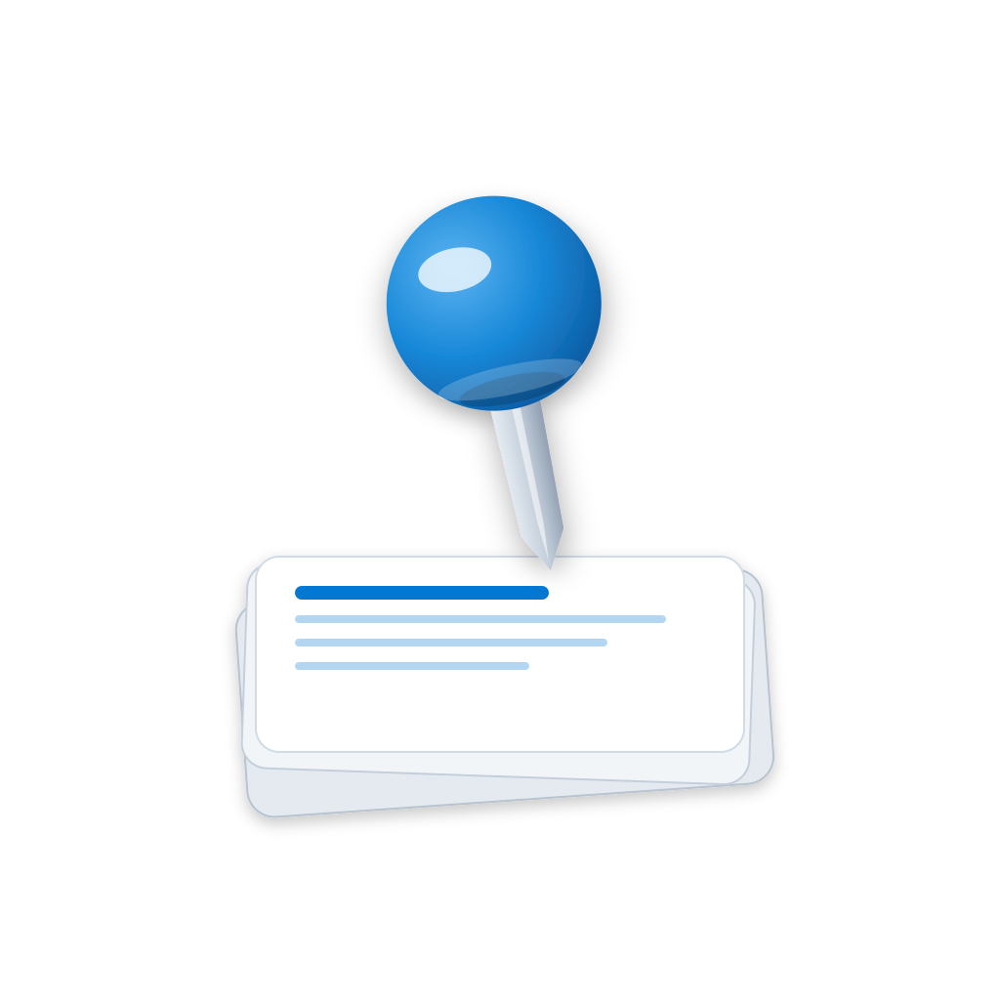

PinBoard Icon · v2（去蓝色底）
透明底版本 · 关注：在深色背景下图钉/卡片边缘还看得清吗？
常用尺寸（深色背景）

256
128
64
48
32
16
多种背景下识别性测试
纯白
浅灰（Win11 桌面）
中灰
深色
黑色
蓝紫渐变
日落渐变
风景壁纸
实际使用场景
Win11 任务栏（最常见）
🔍
📁
💬
🌐
📧
开始菜单（对比其他应用）
📧
邮件
PinBoard
📝
便签
📁
文件
小尺寸可读性（放大后仔细看）
16px · 暗
16px · 亮
32px · 暗
32px · 亮